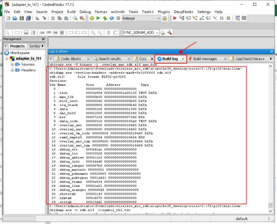
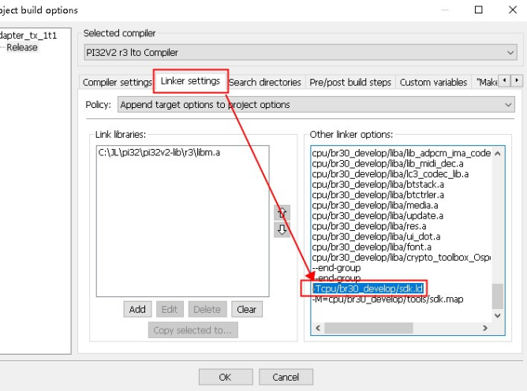
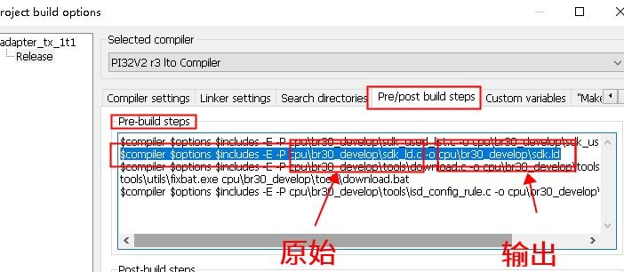
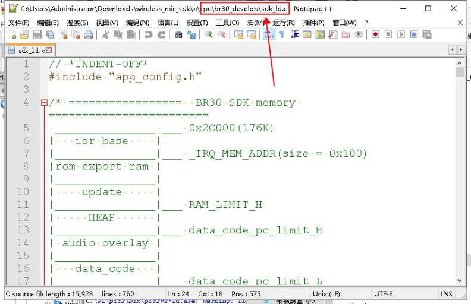
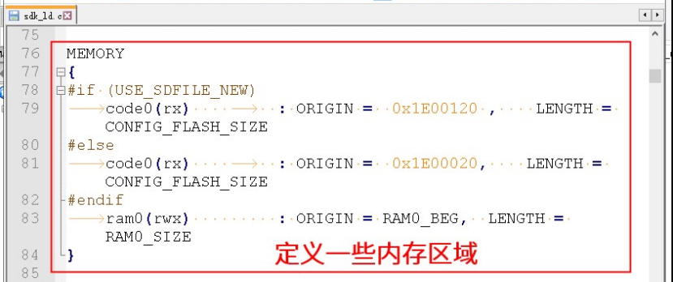
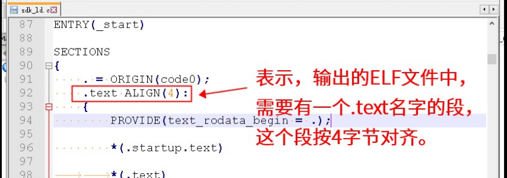
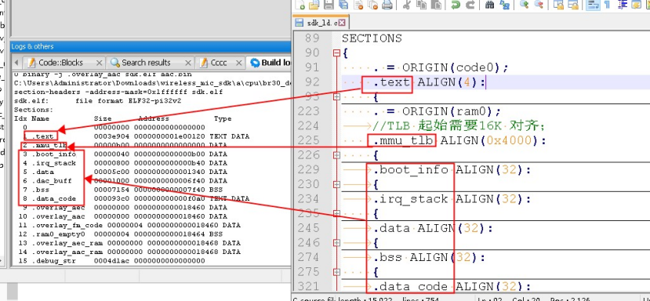
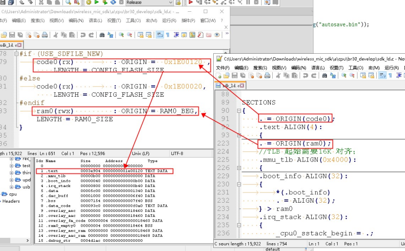

4.1.7.1. Viewing the Overall Usage (Size of Each Section)
After building and linking, the post-processing script is called. This script uses objdump -h to output the section information of the ELF file generated by the link. For example:

Figure 1
The command shown in Figure 1, C:\JL\pi32\bin\llvm-objdump.exe -section-headers sdk.elf, is the command that produces this output.
4.1.7.1.1. How to interpret the build log output
The boxed items mean the following:

Note: "Section name" (段名) refers to the output sections that the SDK defines in the ld script.
These sections generally correspond to regions on the chip.
Typically, the .text section represents the region where the program resides, and .data corresponds to the region where the global variables reside.
The last column, Type, indicates what kind of data the section in that row contains, where:
Type |
Meaning |
|---|---|
TEXT |
Code |
DATA |
Data (initial values not all 0) |
BSS |
Data (initial values all 0, or no initial values specified) |
If a section has both TEXT and DATA, the section contains both code and data.
Note
If the Type column is empty, the section usually holds additional information that is used by tools and is not actually placed on the device to run. For example, the sections starting with .debug_ in the figure above all contain debug information, such as the file location of each function.
4.1.7.1.2. Mapping sections to the ld file
The SDK can define its own sections; they are defined in the ld file. You can find this file as follows:
Determine which ld file is used for linking:
Find the location of the ld file used for linking


In the linker flags, find an option like -Txxx.ld; xxx.ld is the ld file being used.
Determine the original file from which the ld file is generated:
Find the location of the sdk_ld.c file
Newer SDKs use macros defined in the SDK to determine some parameters in the ld file.
To do this, they use an sdk_ld.c file, which is first preprocessed to expand the macros and generate the final ld file used for linking.
Check whether this step is present:
In
pre/post build steps, findpre-build steps, then find something like-o xxx.ld; the input before it is thesdk_ld.cfile. Here it is thecpu\br30_develop\sdk_ld.cfile.
Open the correspondingsdk_ld.cfileHow to interpret the sdk_ld.c file
Find and open the sdk_ld.c file. Its content is similar to the following:





The following shows how the output described in the ld file corresponds to the sections in the actual ELF file:

Note
If a section name on the left cannot be found in the corresponding ld script on the right, the usual reasons are:
The ld script may include other ld scripts (through
#includeorINCLUDE)The section really is not specified in the ld script. In this case, the linker keeps the section names from the original input .o or .a files. For example, suppose we add a function
footo a .c file and use__attribute__((section(".foo")))to place this function in the.foosection, but the ld script does not specify which output section.foogoes to. The linker then generates a section named.foothat contains the function foo.
To find out where a section comes from, we recommend searching all files of the project (including source code, .a files, etc.) for the section name as a text string
